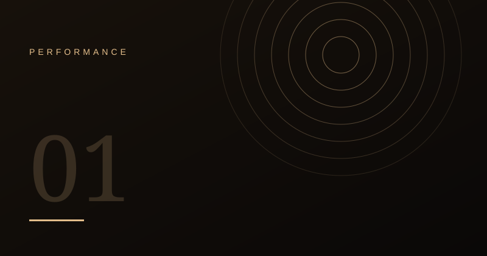
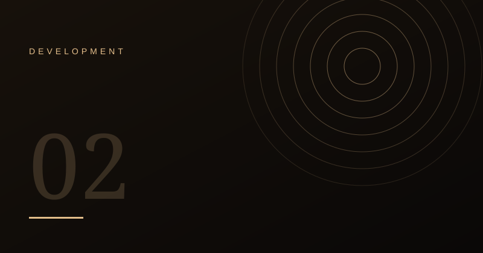
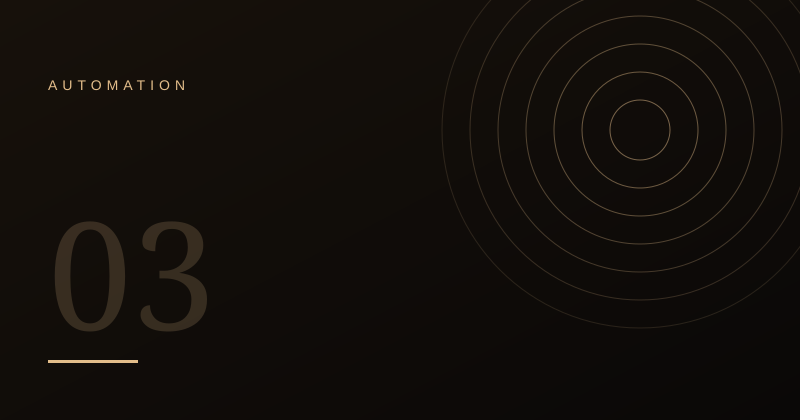
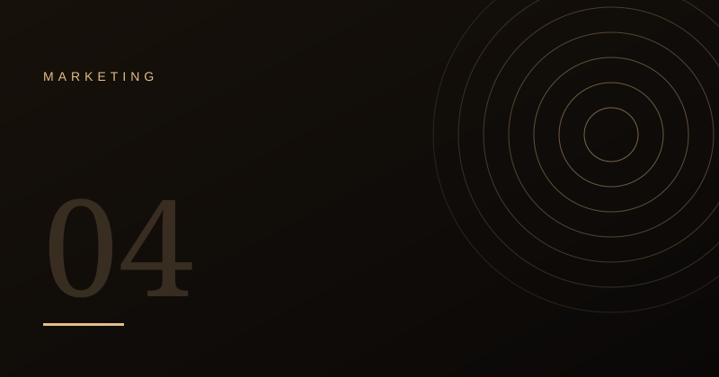

How I Make WordPress Sites Fast Without Piling On Plugins
A practical checklist for cutting load time: images, caching, database hygiene and fewer moving parts.
Read article →
A practical checklist for cutting load time: images, caching, database hygiene and fewer moving parts.
Read article →
When writing your own CPTs, tables, hooks and filters beats installing another plugin.
Read article →
Simple, reliable automations: lead capture, order alerts, follow-ups and reporting.
Read article →
How content structure, schema and consistent entities help you appear in classic and AI-driven results.
Read article →No articles match your search.